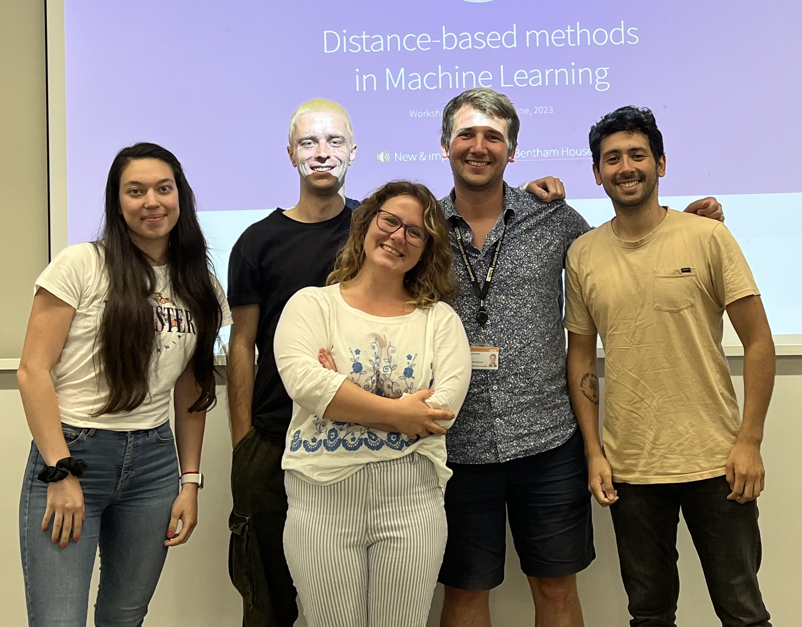

Workshop Report: ‘Distance-based methods in machine learning’
The department co-hosted a workshop on ‘Distance-based methods in machine learning’ with the UKRI CDT in Foundational AI based at the UCL Centre for Artificial Intelligence on the 27th and 28th June 2023. We had around 60-70 attendees, speakers, and poster presenters from across the UK and Europe to discuss recent advances in using statistical distances to tackle challenging problems in computational statistics and machine learning.

Statistical distances are mathematical objects which allow us to calculate the distances not between Euclidean measurements, but directly between probability distributions. They are used in a wide variety of ways including the design of statistical estimators, to create approximations of probability distributions, or even to measure the convergence of a sequence of random variables. They are also widely used as theoretical tools to bound the approximation of distributions of interest, or demonstrate convergence.
These are all key technical challenges for the implementation of safe and robust statistical and machine learning methods in practice. For example, recent work from our department (and specifically Dr. François-Xavier Briol and Dr Jeremias Knoblauch) showed how statistical distance can be used to design robust and scalable Bayesian inference methods for complicated scientific simulators. Through the choice of an appropriate statistical distance, their method was able to cope much better with the presence of a small number of outliers in the data compared with existing methods. This work attracted a lot of interest from the research community and, in 2022, received the Best Paper Award at the International Conference in Artificial Intelligence and Statistics, one of the leading publication venues at the intersection of statistics and machine learning.
However, this is just one of many areas where statistical distances can have a significant impact. The workshop therefore brought together a broad range of speakers including mathematicians, probabilists, statisticians, and machine learners to discuss a number of key open questions, including:
- What are key desirable criterion for a statistical distance?
- How should one choose a statistical distance for a particular problem?
- How can we estimate statistical distances efficiently from data?
- What new application areas could benefit from the use of statistical distances?
The workshop was organised by Dr. François-Xavier Briol and the superb team of PhD students: Masha Naslidnyk, Oscar Key, Matias Altamirano and Ilina Yozova. More details can be found on the workshop’s webpage: https://dbmml.github.io